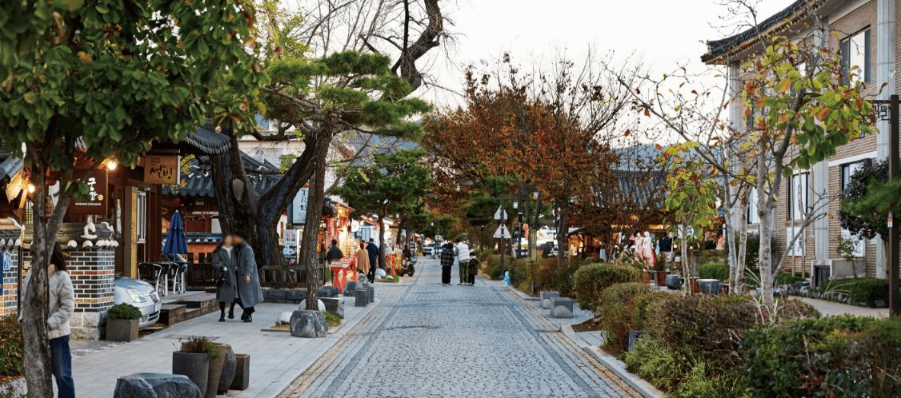
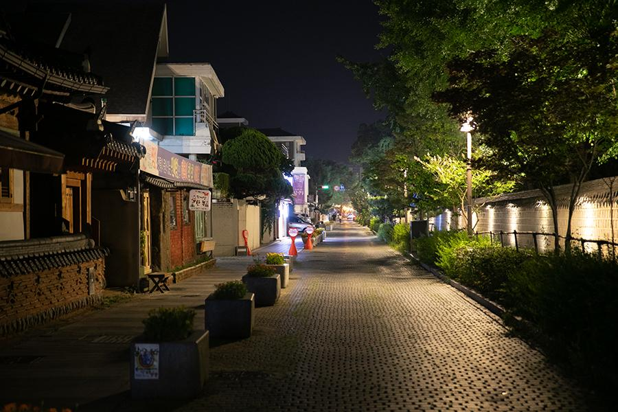

ESFJ 추천 여행지
전라북도 전주


추천 이유
ESFJ는 사람들과 함께하는 시간을 소중히 여기고 따뜻한 분위기를 좋아합니다. 전주는 한옥마을의 정겨운 풍경과 다양한 먹거리, 전통문화를 함께 즐길 수 있는 여행지로, 가족이나 친구들과 추억을 만들기에 매우 적합한 곳입니다.
추천 여행 코스
- 전주 한옥마을
- 한복 체험 및 사진 촬영
- 경기전·전동성당 관람
- 남부시장 방문
- 전주 야시장 먹거리 탐방
추천 포인트
- 전통문화와 현대 감성이 공존하는 도시
- 맛집과 길거리 음식이 풍부함
- 한복 체험과 인생 사진 촬영 가능
- 가족·친구와 함께 여행하기 좋은 분위기